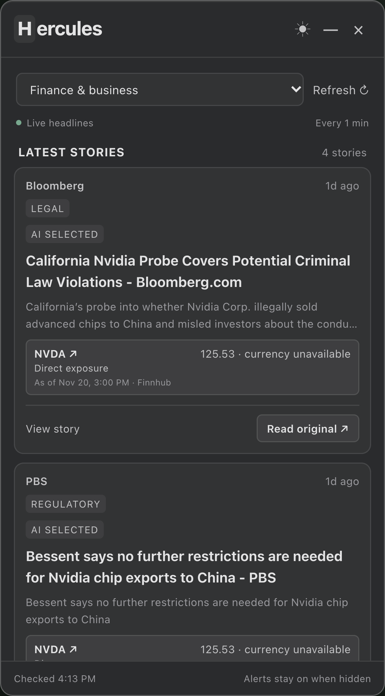
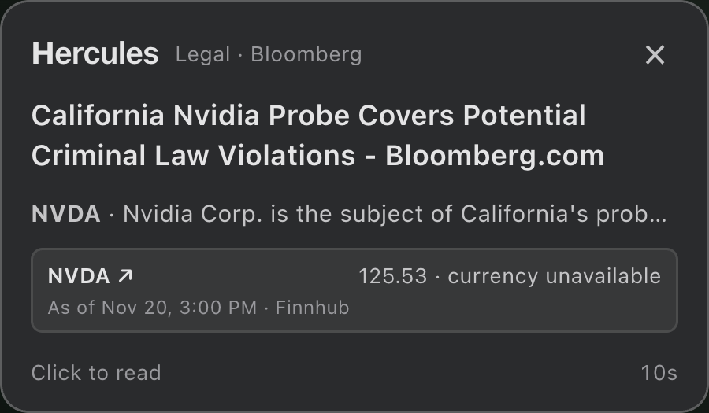
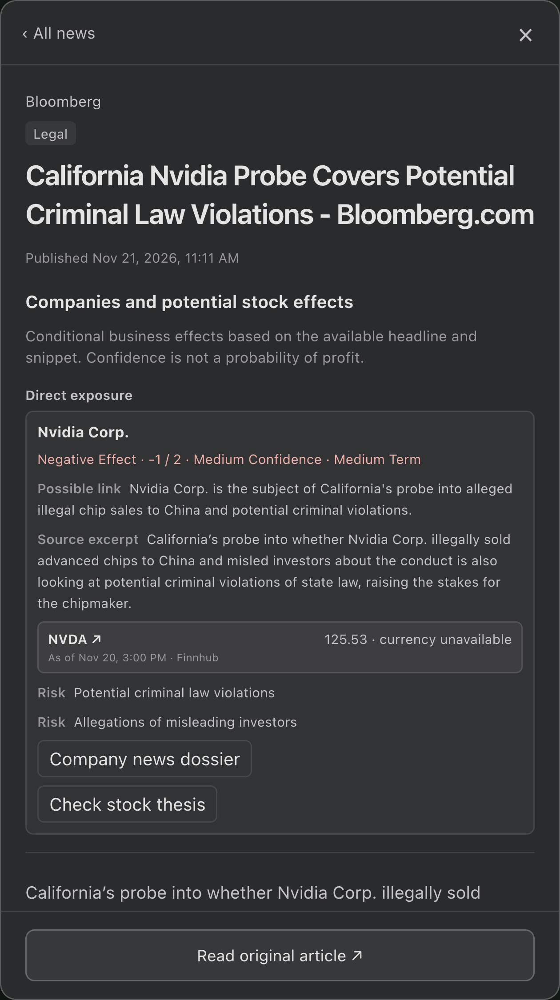

Market research for macOS
The companies
behind the news.
A guidance cut lands in your feed. Which companies are exposed? Has the outlook changed before? Follow the source, read the company’s news history, and check the financial evidence from your menu bar.
Apple silicon DMG · Company dossiers and stock research are available in the source build.
A closer look
Made to stay out of the way
A glance.
A little more.
The original.
Keep your focus where it belongs. Hercules lives in the menu bar and brings new stories to the edge of your screen.


Current source build
An analyst’s day with Hercules
Prioritize the reading list
Review model-selected news across eight categories. Inspect the source excerpt behind a direct or indirect company link, then open the publisher’s article.
Open the company dossier
Compare the last 30 days of saved coverage with the preceding 150. See reported figures, recurring catalysts and earlier stories documenting a customer or supplier relationship.
Challenge a stock thesis
Check a story against price trends, profitability, leverage and valuation. The assessment shows its evidence and flags missing or stale inputs before you draw a conclusion.
See the flow
From headline to source.
Desktop preview 1.0.2 · sample headlines and quotes.
Download videoProposed features
Where the research goes next
Pair headlines with SEC filings, follow management commitments to their outcomes, and measure how a stock performed against its benchmark after a catalyst.
Choose your build
For company dossiers and stock research, follow the setup guide to run the desktop and backend together. The 1.0.2 DMG gives you the earlier news-and-quotes widget connected to the hosted API.
The macOS preview is ad-hoc signed and not notarized. Release availability and installation details are listed on GitHub.